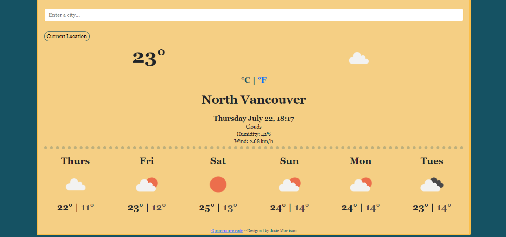
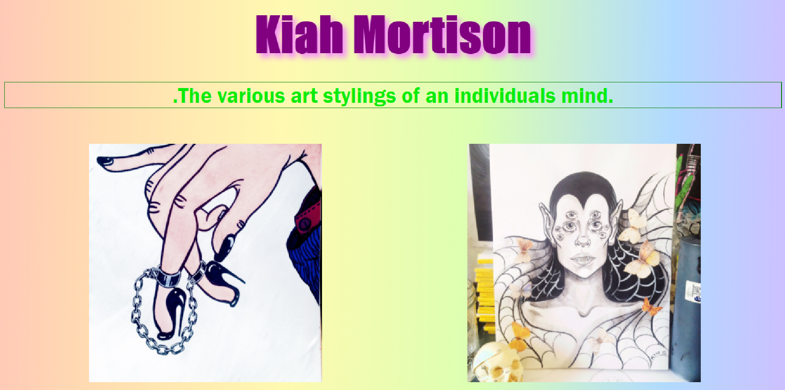
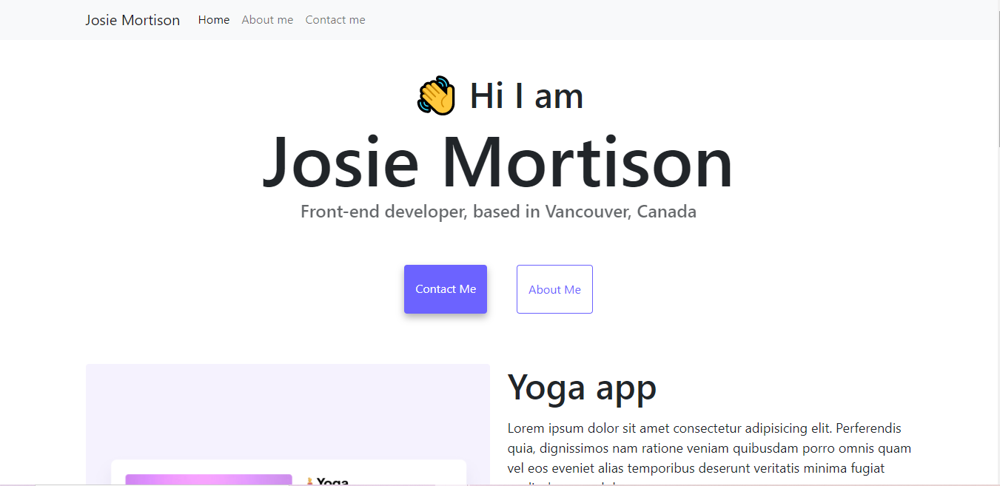
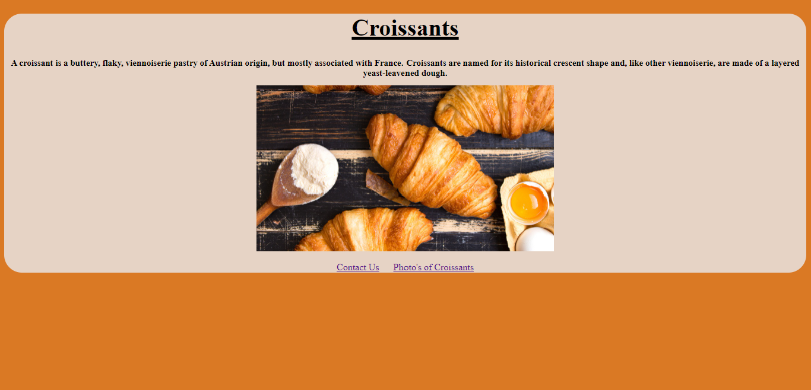

Weather App
Built using Vanilla JS and an open weather API.

Art Project
Landing page built with HTML,CSS, and JS.

Replica Portfolio Project
Given a website, I then had to code my own site to look as similar as possible

Croissant Project
This project focused on how to build and link multiple pages